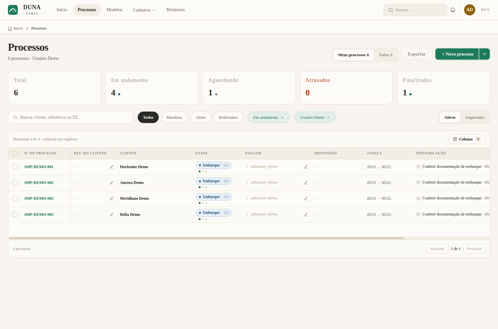
Import operations
Duna Comex
A checklist turns an import template into tasks and blocks stage transitions while required work is pending.
Next.js · Fastify · PostgreSQL
Full-stack software developer
I build web applications for teams that need to track work, decide what comes next, and see what has already happened. I was the sole developer on all four projects below.
Explore projects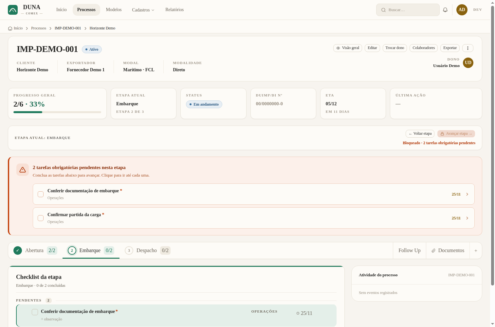

Import operations
A checklist turns an import template into tasks and blocks stage transitions while required work is pending.

Content and benefits
One portal connects community groups, partner offers, and learning. Its dashboard shows how managers and operators use the content.
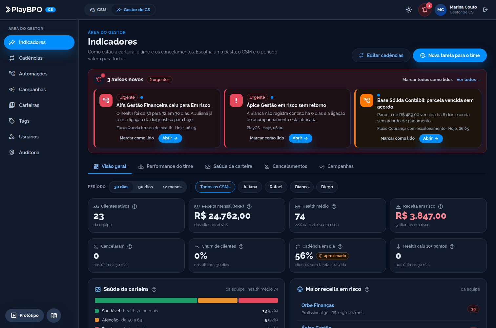
Customer Success
From account health to the team’s next action, with portfolio assignment, cadences, and a visual automation editor.
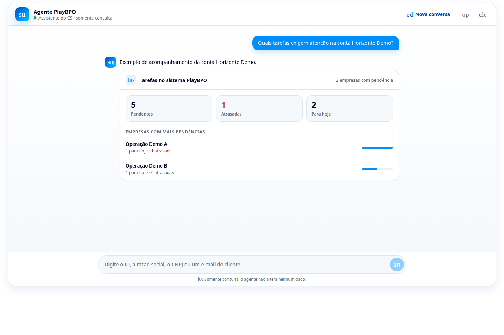
Embedded assistant
A chat inside SGI uses customer context to organize support queries, tasks, and account health summaries.
Featured project
Sole developer · Bruno de Souza Tobias
Past project · discontinued
Import operations management, from opening an operation to delivering the cargo.
Duna organized import operations into stages, tasks, deadlines, and documents. Teams could see progress and review the history within each operation.
Reusable templates generate stages and tasks for each operation. Conditional rules adapt the checklist to the operation.
Tasks have due dates and owners. The API checks for outstanding tasks that block stage transitions.
The API records audit events and provides attachment endpoints. The interface exports checklists and follow-ups as PDFs.
The interface uses Recharts for reporting. The API applies authentication and checks permissions by role and context.
The dashboard brings together import operations and upcoming tasks, with a scope selector for the user’s own workload.
A shared search interface lets users find customers, suppliers, and import operations. User and role settings control access to operational areas.
The separately hosted landing page used HTML, CSS, and JavaScript, with a webhook for contact inquiries. The operational interface called the Fastify API, which accessed PostgreSQL through Prisma.
TypeScript · Tailwind CSS · React PDF · Recharts · Node.js
These screens follow a fictional import in the original interface of a historical Duna version. The frontend ran locally with a demo session and simulated API responses.
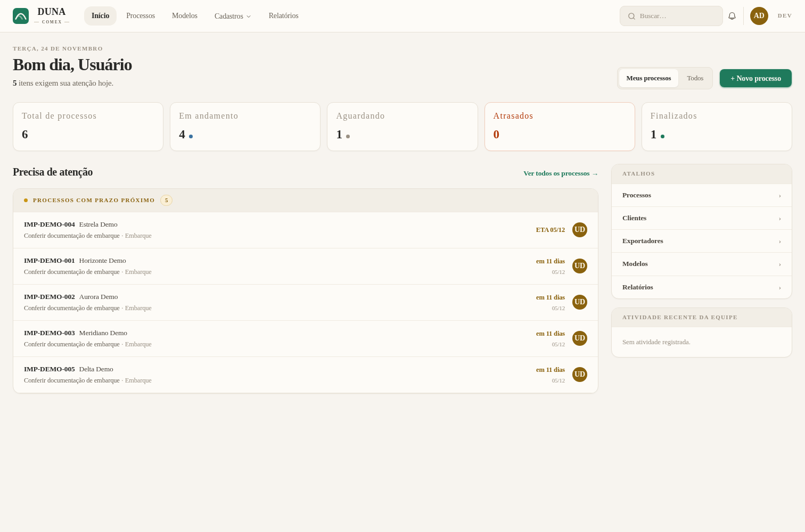


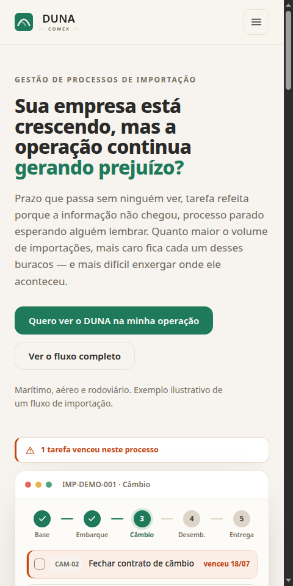
The Fastify API and PostgreSQL data model were reviewed in code. The visual demonstration covers the frontend.
Benefits portal for BPO teams
Sole developer · Bruno de Souza Tobias
One place to learn, meet peers, and explore partner benefits.
I modernized the Play Benefícios portal in Vue and brought three areas together on the Box home screen. Teams learn and resume content in Playflix, find groups and events in Community, and explore partner offers in Ecosystem. The admin area tracks content engagement for managers and operators.
The catalog lists active categories and published content. A search endpoint queries the full-text index in D1.
The reader renders Markdown as HTML and extracts headings to build a table of contents.
Endpoints save and retrieve progress for individual items. Downloadable materials have a dedicated route.
The admin area includes content editing, categories, and partner management.
The home screen brings together Community, Playflix, and Ecosystem. It highlights the next event, new partners, and recent publications. Each operator has an individual reading and viewing history.
Members browse upcoming events and live sessions, choose a WhatsApp group, and accept its rules before opening the invitation. Administrators maintain groups, guidelines, and events.
Members browse software partners and educators by category. Each offer has a shareable link and can include a benefit, a copyable coupon, and redemption instructions.
In the admin area, the Operators filter shows team activity over 7, 30, or 90 days. The dashboard compares managers and operators by content opens, video starts, completions, downloads, users, and messages to the Paulo assistant.
Daily views, the ten most popular items, and unsuccessful searches help editors identify gaps, revise a resource, and manage its publication.
Vite builds the Vue application. Cloudflare Worker routes query D1 for catalog and progress data and use R2 to serve files.
The PlayBox interface ran locally with its mock API and demo data.
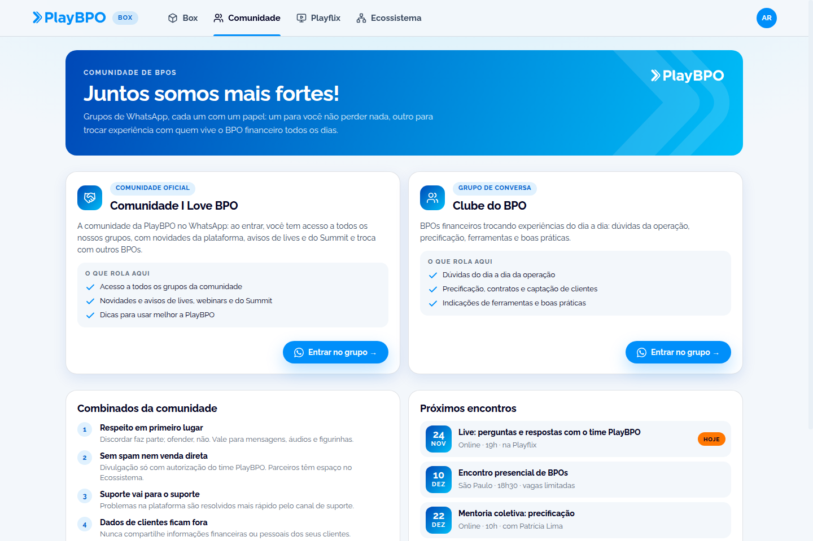


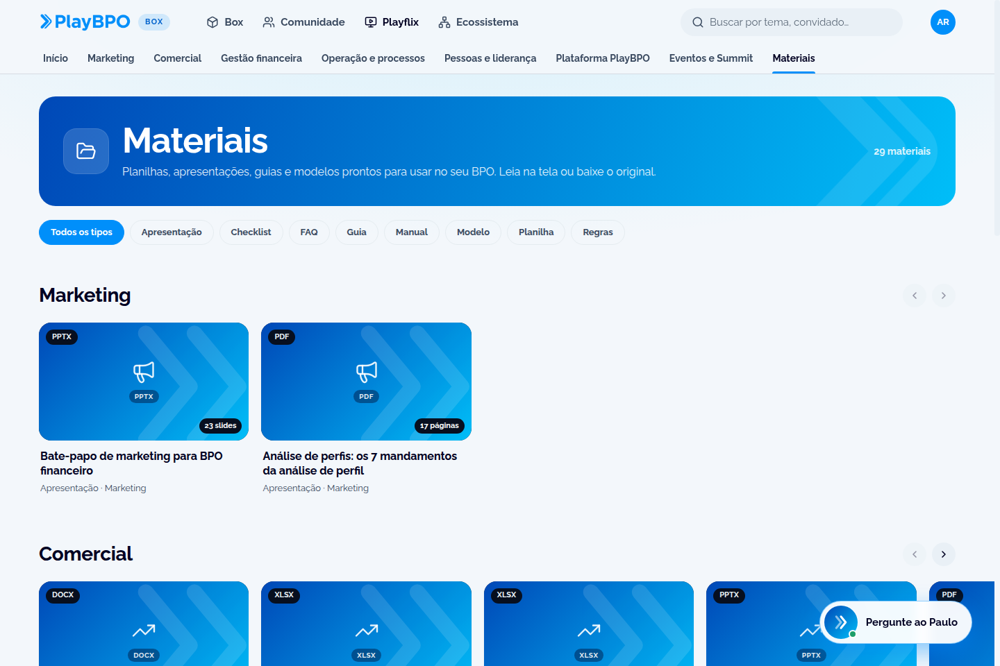
The catalog, search, and progress features were reviewed in code. The project includes a mock API for local development.
Back to projectsCustomer Success
Sole developer · Bruno de Souza Tobias
From the customer portfolio to the next action on each account.
I developed Mini CX, called PlayCS in SGI, for PlayBPO’s Customer Success team. CSMs start with their portfolio, identify accounts needing attention, and open a customer record to review health, history, support, and activities. Managers oversee portfolio distribution and configure team workflows.
The portfolio supports customer filters and switching between saved views.
The domain module exposes scoring factors, applies weights and bands, and provides score history.
Boards show customers moving through cadence stages. Campaign and template screens help organize activation efforts.
The visual editor organizes connected workflow blocks. The interface includes an execution list.
The customer record brings together activities, history, and support. The agenda gives the CSM a daily view alongside portfolios and cadence boards.
Managers distribute portfolios and review indicators for customer health, campaigns, cancellations, and team activity. Audit records can be filtered by user, action, customer, and status.
Managers choose who receives new accounts. They can configure rotation, percentage shares, and ordered rules that take each CSM’s capacity into account.
Managers use CSM and period filters across the overview, team performance, portfolio health, cancellations, and campaigns. Alerts highlight accounts needing attention.
The editor provides triggers, conditions, waits, and actions. The payment escalation example shows how managers connect those blocks.
SGI provides single sign-on and checks PlayCS access. The Vue and Pinia app runs under /playcs/. Its Node.js and Hono API handles module actions and persists data in MySQL.
The current module interface running locally with its fictional test dataset. The gallery follows both the CSM workflow and management tools.
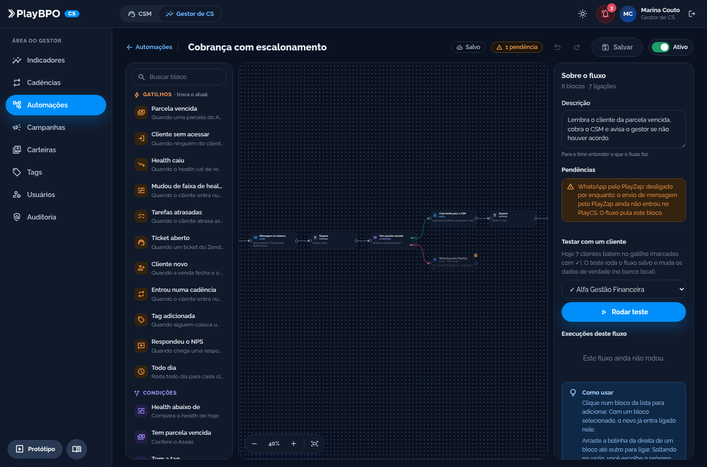
The editor connects triggers, conditions, waits, and actions in a payment escalation workflow.

The team tracks invitations sent, bookings, and completed meetings by campaign.
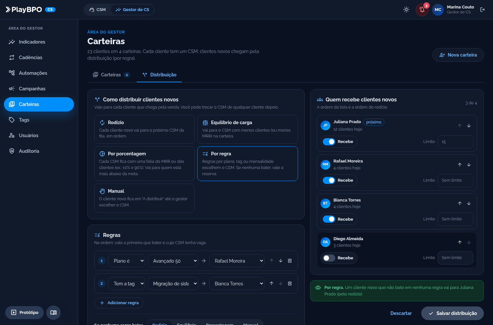
CSM selection, capacity, and rule priority for assigning incoming customers.

Tag catalog and the customers associated with each tag.
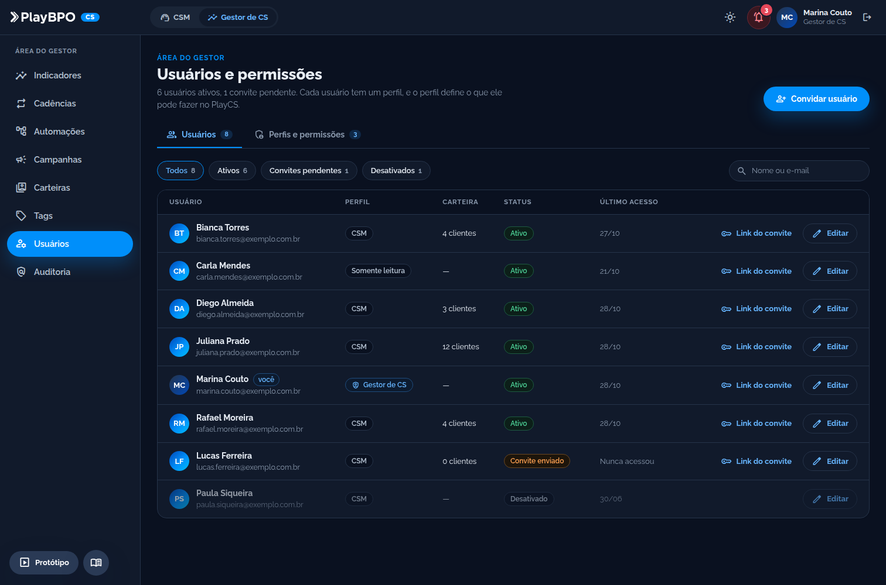
User directory, invitations, access profiles, and account status.

Permission matrix showing the actions available to each role.
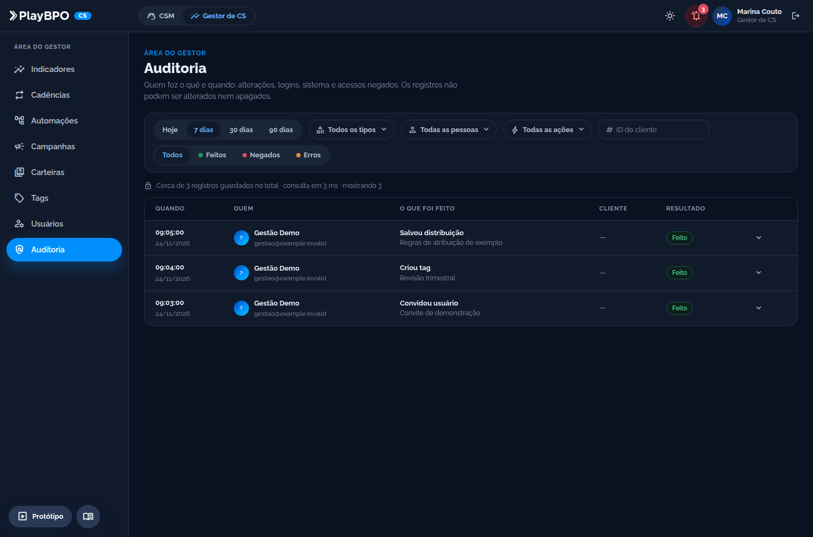
Filters by period, person, action, and outcome. Visible events are fictional.


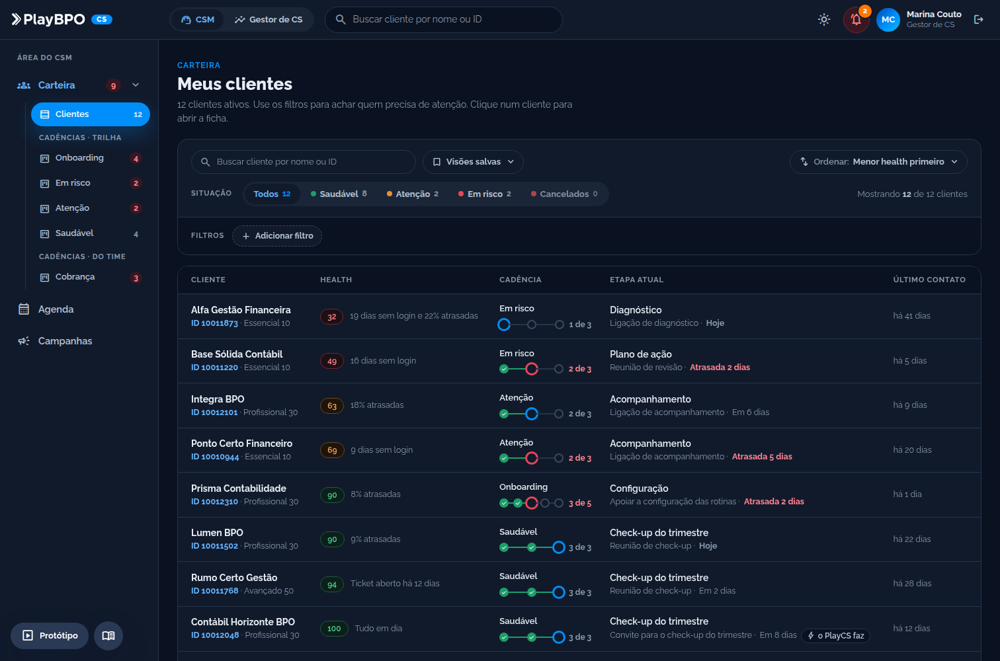
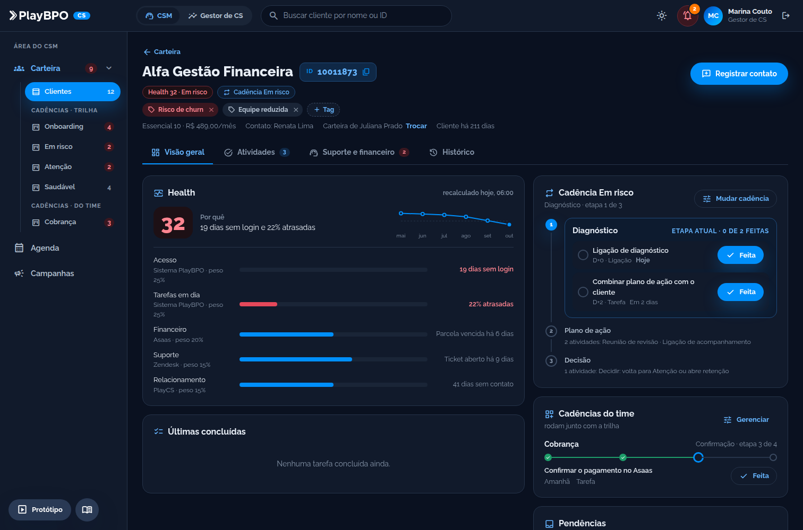
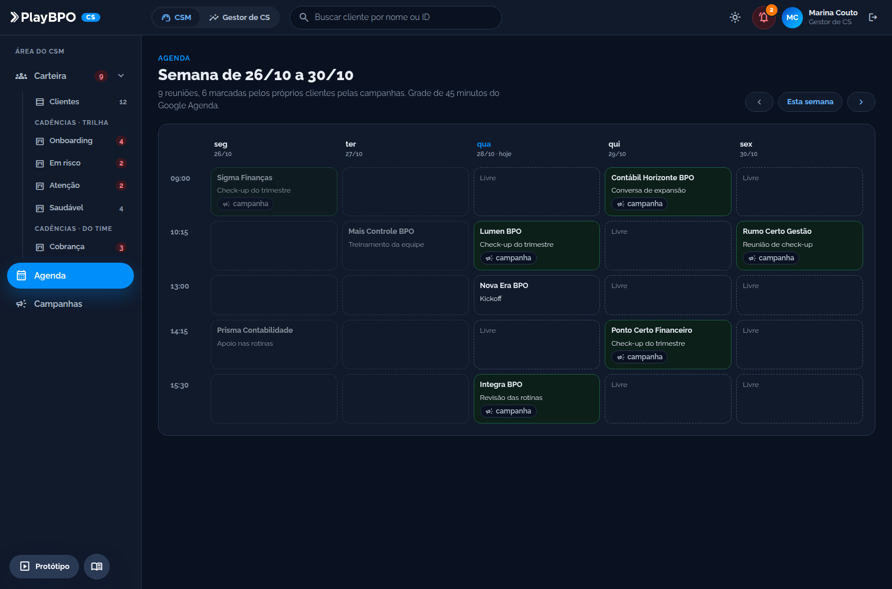

All 14 screens were captured from the SGI PlayCS module source. The demo used a simulated session and local API responses. Single sign-on, external integrations, and persistence were reviewed in code.
Back to projectsEmbedded assistant
Sole developer · Bruno de Souza Tobias
Chat and summaries inside the management system.
The assistant connects the SGI interface to n8n so teams can request information and summaries in their existing workspace.
The service receives the conversation, user, and selected customer. A session identifier associates the request with the conversation.
The service provides separate paths for ticket summaries and health score summaries.
A service layer interprets the response from n8n and handles integration failures.
The service includes an operation to record feedback about the assistant experience.
The chat accepts an ID, business name, Brazilian company registration number, or email. Its interface organizes responses into summary, ticket, installment, health, and task cards with source labels.
For the health card, SGI receives a summary and dated score increases and decreases. Team members can rate a response and add a reason or suggestion.
CodeIgniter views present the chat inside SGI. A PHP service sends requests to the external n8n workflow and processes its responses.
The original chat displays a sample query and renders the response as a task card. The response was simulated locally to demonstrate the interface.
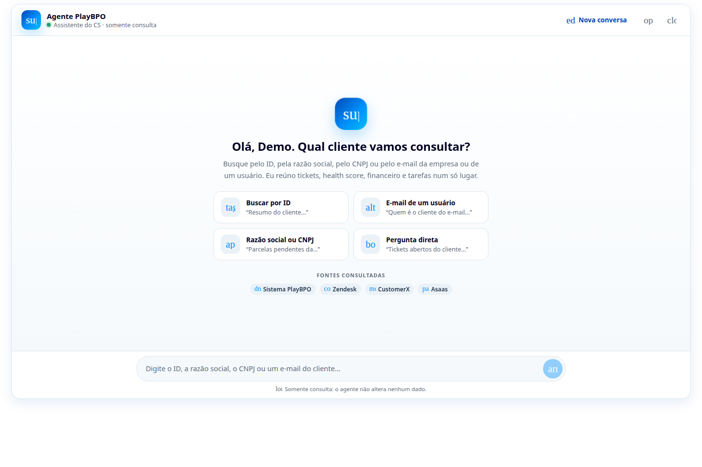
The integration was reviewed in the SGI code. External workflow execution and response content are pending verification.
Back to projects